SDFish · Bạn của ngư dân
Ảnh chụp từng màn của app, đánh số từng nút kèm mô tả nút đó làm gì. Bà con đọc phần nào cần phần đó.
App chạy thẳng trên trình duyệt điện thoại, cài về màn hình chính cho tiện.
Trong app có nút Hướng dẫn ở góc trái dưới. Bấm vào là app tối màn lại, sáng đúng cái nút đang nói tới kèm một câu giải thích — giống hệt các ảnh trong sách này nhưng ngay trên máy của bà con. Lần đầu mở mỗi màn app tự chỉ một lượt; muốn xem lại thì bấm nút đó, hoặc vào nút tài khoản chọn Chỉ lại từ đầu trên màn hình.
Nhìn một cái là biết có việc gì gấp, và đi đâu tiếp.
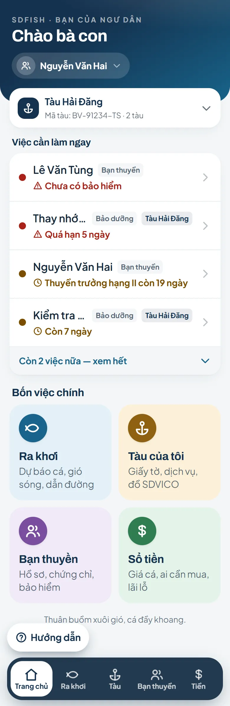
12345678| # | Nút | Làm gì |
|---|---|---|
| 1 | Nút tài khoản | Hiện tên bà con. Bấm vào mở bảng: chỉnh cỡ chữ, xem hướng dẫn, đổi mật khẩu, đăng xuất. |
| 2 | Chọn tàu | Hiện tàu đang xem. Bấm để đổi tàu khác hoặc thêm tàu mới. Giấy tờ, bảo dưỡng, lãi lỗ đều tính theo tàu đang chọn ở đây — chọn nhầm tàu là xem nhầm sổ. |
| 3 | Việc cần làm ngay | App tự nhắc giấy tờ, bảo hiểm, bảo dưỡng sắp hết hạn. Bấm vào dòng nhắc là tới thẳng chỗ xử lý, khỏi phải đi tìm. |
| 4 | Ô Ra khơi | Bản đồ biển: gió sóng, chỗ có khả năng có cá, dẫn đường tiết kiệm dầu. |
| 5 | Ô Tàu của tôi | Giấy tờ tàu, dịch vụ và đồ đã mua của SDVICO, tra mức phạt. |
| 6 | Ô Bạn thuyền | Hồ sơ thuyền viên, chứng chỉ, bảo hiểm, sổ ứng tiền. |
| 7 | Ô Sổ tiền | Giá cá, ai đang cần mua, lãi lỗ từng chuyến, công nợ. |
| 8 | Thanh dưới cùng | Luôn có ở mọi màn: Trang chủ · Ra khơi · Tàu · Bạn thuyền · Tiền. Lạc chỗ nào thì bấm Trang chủ về lại. |
Bấm nút tài khoản ở đầu Trang chủ để mở bảng này.
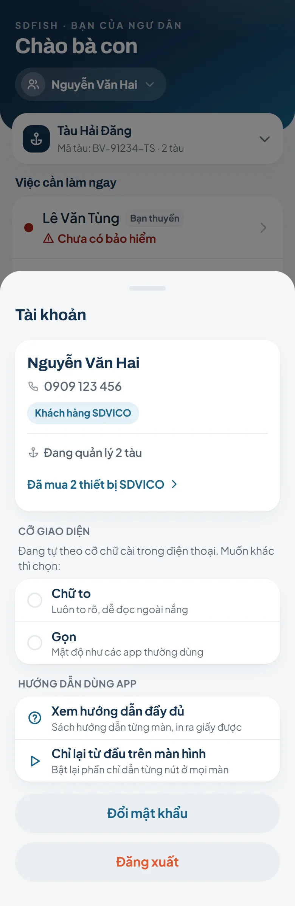
12345| # | Nút | Làm gì |
|---|---|---|
| 1 | Cỡ giao diện | Ba kiểu: Theo máy (mặc định — chữ trong điện thoại to thì app to theo), Chữ to, Gọn. Bấm lại lựa chọn đang bật để về Theo máy. |
| 2 | Xem hướng dẫn đầy đủ | Mở đúng quyển sách hướng dẫn này, in ra giấy được. |
| 3 | Chỉ lại từ đầu trên màn hình | Bật lại phần chỉ dẫn từng nút ở mọi màn, như lúc mới dùng app. |
| 4 | Đổi mật khẩu | Đặt mật khẩu mới. Mật khẩu mới dùng được cả bên SDVICO. |
| 5 | Đăng xuất | Thoát tài khoản. Dữ liệu riêng trên máy được dọn đi, người khác cầm máy không xem được. |
Bản đồ biển chiếm cả màn hình. Mọi thứ khác nổi lên trên bản đồ.
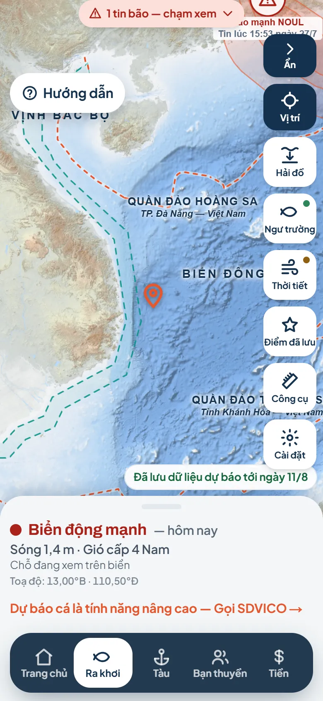
12345678| # | Nút | Làm gì |
|---|---|---|
| 1 | Nút Lớp / Ẩn | Thu gọn cả dãy nút cho thoáng bản đồ, bấm lại là hiện ra. |
| 2 | Hải đồ | Chọn nền bản đồ: hải đồ độ sâu (mặc định, có số mét), nước nóng lạnh, vùng nhiều mồi, ảnh mây trời. |
| 3 | Ngư trường | Vùng có khả năng có cá, chọn theo loài. Chấm càng đậm càng nhiều khả năng; hồng tâm là điểm nóng nhất. |
| 4 | Thời tiết | Bật lớp gió hoặc sóng vẽ động theo giờ, có thanh thời gian kéo tới lui và nút chạy. |
| 5 | Điểm đã lưu | Ghim chỗ hay đánh và đặt tên. Đặt cảng nhà ở đây (gõ tìm trong 173 cảng cả nước). |
| 6 | Công cụ | Đo khoảng cách giữa hai điểm trên biển. |
| 7 | Cài đặt | Đổi đơn vị khoảng cách (hải lý / km) và kiểu toạ độ. |
| 8 | Bảng dưới đáy | Biển êm hay động, sóng mấy mét, gió cấp mấy ở chỗ đang xem. Chạm vào biển là bảng đổi sang chỗ vừa chạm; kéo bảng lên để xem đủ mưa dông, nước cạn, tuần trăng, toạ độ. |
Bốn tab trên đầu màn. Tab Giấy tờ lo chuyện đủ điều kiện ra khơi.
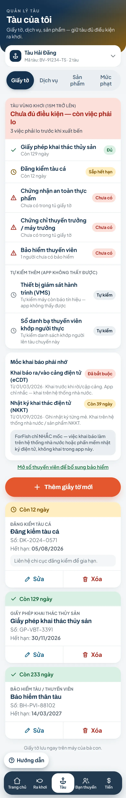
12345| # | Nút | Làm gì |
|---|---|---|
| 1 | Tab Giấy tờ | Checklist xuất bến + tủ giấy tờ của tàu đang chọn. |
| 2 | Tab Dịch vụ | Dịch vụ SDVICO, cước chờ đóng, nút gọi SDVICO, sổ nhắc bảo dưỡng. |
| 3 | Tab Sản phẩm | Đồ đã mua và hạn bảo hành. |
| 4 | Tab Mức phạt | Tra mức phạt theo Nghị định 38/2024. |
| 5 | Thêm giấy tờ | Ghi loại giấy, số giấy và ngày hết hạn. App tự nhắc trước khi hết hạn. |
Dịch vụ đang dùng của SDVICO và sổ nhắc bảo dưỡng tự ghi.
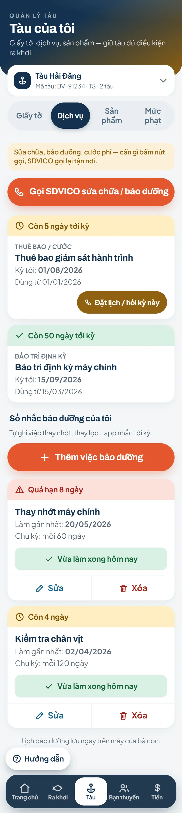
12| # | Nút | Làm gì |
|---|---|---|
| 1 | Gọi SDVICO sửa chữa / bảo dưỡng | Gửi yêu cầu: sửa chữa, đặt bảo dưỡng, hỏi cước. Để lại tên và số điện thoại, SDVICO gọi lại. Gấp thì có số hotline ngay trong bảng. |
| 2 | Thêm việc bảo dưỡng | Tự ghi việc định kỳ (thay nhớt, kiểm tra chân vịt), ngày làm gần nhất và số ngày lặp lại. App nhắc khi tới hạn. |
Tra mức phạt trước khi ra khơi. Không cần đăng nhập cũng xem được.
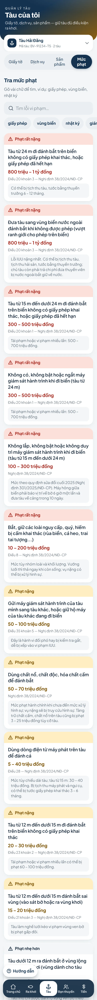
1| # | Nút | Làm gì |
|---|---|---|
| 1 | Ô tìm lỗi | Gõ vài chữ của lỗi muốn tra, danh sách lọc ngay. |
Ai đi tàu mình, giấy tờ tới đâu, ứng tiền bao nhiêu.
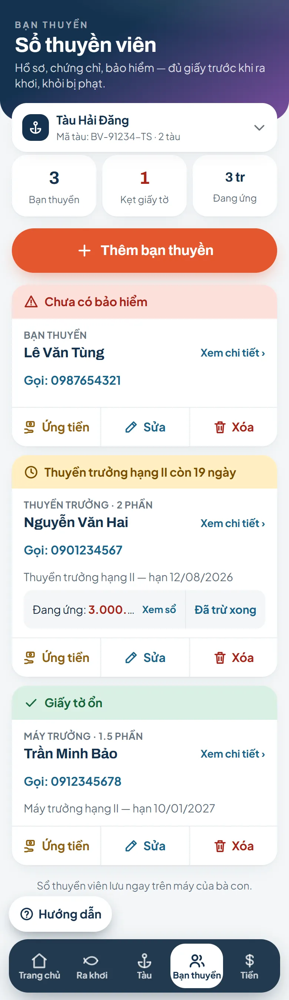
1| # | Nút | Làm gì |
|---|---|---|
| 1 | Thêm bạn thuyền | Ghi tên, số điện thoại, chứng chỉ, bảo hiểm và ngày hết hạn. |
Nắm giá trước khi vào bờ, khỏi bị ép giá. Không cần đăng nhập.
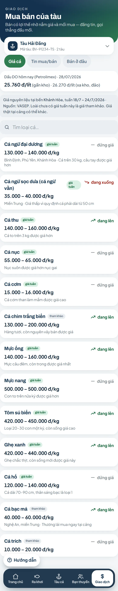
123456| # | Nút | Làm gì |
|---|---|---|
| 1 | Tab Giao dịch | Giá cá, ai cần mua, bán ở đâu. |
| 2 | Tab Hiệu quả | Sổ lãi lỗ từng chuyến, báo cáo năm, máy tính chuyến, chia tiền. |
| 3 | Tab Công nợ | Ai nợ ai, ứng trước bao nhiêu. |
| 4 | Giá cá | Giá tham khảo theo tuần, kèm giá dầu DO. |
| 5 | Ai cần mua | Đầu nậu, nhà máy đang cần loài gì, bao nhiêu — bấm để gọi. |
| 6 | Bán ở đâu | Vựa, đầu mối, doanh nghiệp thu mua theo vùng và theo loài, có số điện thoại. |
Lãi lỗ từng chuyến, tính theo tàu đang chọn.
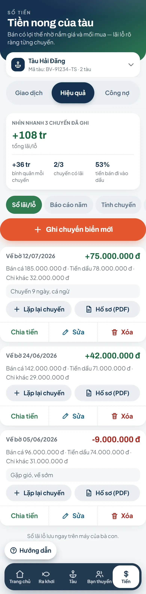
1234| # | Nút | Làm gì |
|---|---|---|
| 1 | Sổ lãi/lỗ | Mỗi chuyến ghi: dầu, đá, tổn khác, tiền bán cá — app tính lãi lỗ giúp. |
| 2 | Báo cáo năm | Tổng lãi lỗ cả năm, tách theo từng tháng. |
| 3 | Tính chuyến | Máy tính tổn dự kiến trước khi đổ dầu và cần bán bao nhiêu cá mới hoà vốn. |
| 4 | Chia tiền | Chia phần cho bạn thuyền theo cách của tàu mình. |
Mỗi chủ nợ một dư nợ riêng, có lịch sử vay và trả từng lần.
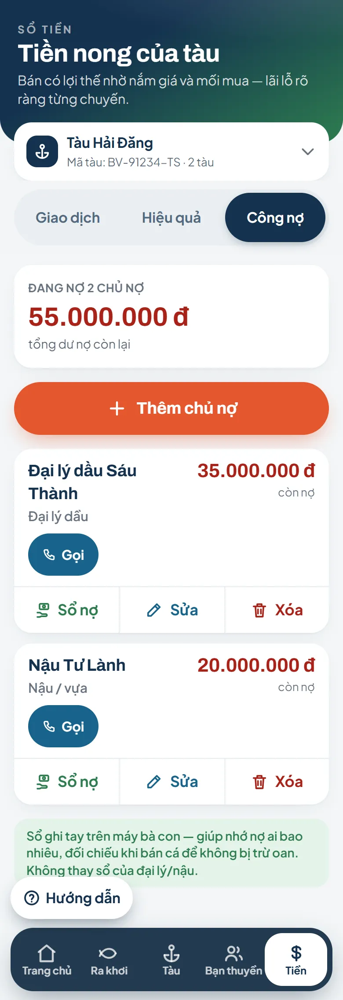
1| # | Nút | Làm gì |
|---|---|---|
| 1 | Thêm chủ nợ | Ghi tên đại lý dầu, nậu, ngân hàng… rồi ghi từng lần vay và trả. |
173 cảng cá chỉ định trên cả nước. Vào từ nút trên bản đồ Ra khơi.
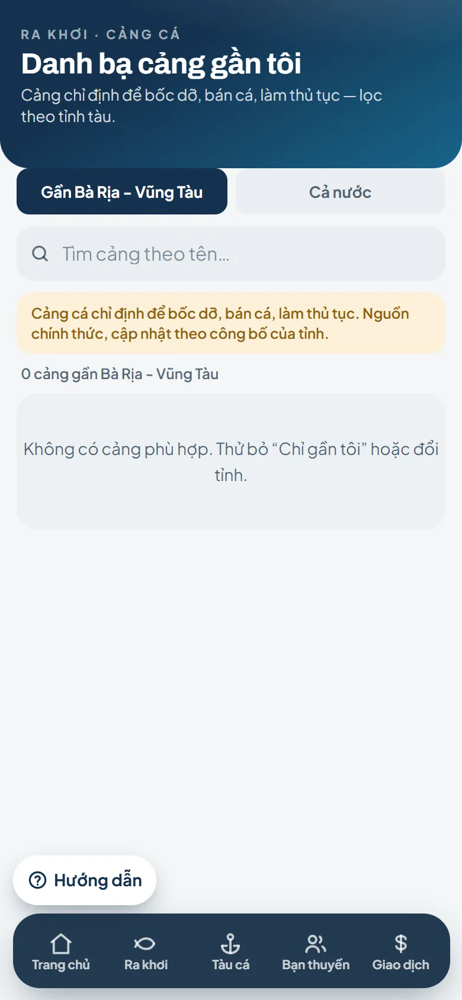
1| # | Nút | Làm gì |
|---|---|---|
| 1 | Ô tìm cảng | Gõ tên cảng, tên tỉnh hoặc huyện để lọc nhanh. |
Vào bằng số điện thoại đã đăng ký với SDVICO. Không cần email.
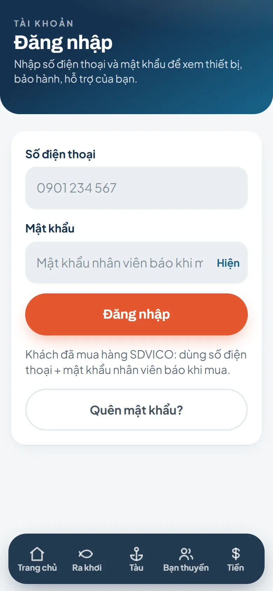
123| # | Nút | Làm gì |
|---|---|---|
| 1 | Ô số điện thoại | Nhập đúng số bà con đã đăng ký với SDVICO. |
| 2 | Ô mật khẩu | Khách mới do SDVICO cấp thì mật khẩu ban đầu là sd123456. Bấm nút Hiện để nhìn thấy mình gõ gì. |
| 3 | Quên mật khẩu? | Nhập số điện thoại và họ tên, nhân viên SDVICO xét rồi đặt lại giúp. |
Bấm nút tài khoản trên Trang chủ → Cỡ giao diện → Chữ to. Hoặc chỉnh cỡ chữ trong cài đặt điện thoại, app tự to theo.
Những gì đã ghi trong máy — giấy tờ, thuyền viên, sổ lãi lỗ, công nợ — vẫn xem được. Gió sóng, giá cá, tin bão cần mạng mới cập nhật được.
Bản đồ nặng nên nạp chậm hơn một chút. Nguồn dữ liệu nào hỏng thì app nói rõ và cho nút Thử lại — không bao giờ im lặng giả vờ như không có bão.
Riêng theo tàu: giấy tờ, bảo dưỡng, sổ lãi lỗ. Chung cả chủ tàu: sổ bạn thuyền. Đổi tàu bằng nút chọn tàu ngay dưới phần đầu màn.
App luôn hỏi lại trước khi xoá và nêu rõ xoá cái gì. Đã xoá thì không lấy lại được — đọc kỹ câu hỏi rồi hãy bấm.
Vào Tàu của tôi → Dịch vụ → Gọi SDVICO, gửi yêu cầu kèm số điện thoại. Nhân viên gọi lại.